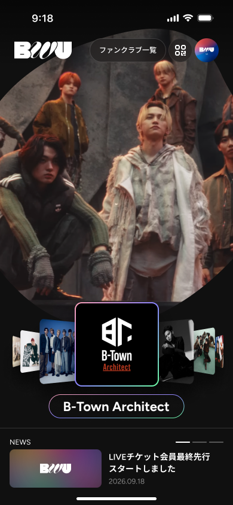

ログイン済みユーザーのスプラッシュ後の画面遷移です。利用規約・ログインは出さず、BWU の文字が「窓」になって次画面（ホーム）をクロップし、0.5s のズームで窓の中に入ってホームが全画面になります。挙動の完成イメージは スプラッシュ（ログイン済み）プロトタイプ を参照してください（遷移完了後は画面タップでリプレイ、?at=crop / zoom / done で各フェーズへジャンプ可）。ロゴ Lottie・背景カラーレイヤーの素材と実装は既存のスプラッシュ素材引き渡しと共通です。
10283-27162）から抽出したパス3本。viewBox 0 0 339 100、表示幅 164px（→ 高さ 48.38px）で画面中央に配置。「窓」のくり抜き・ズームで拡大されるのはこの形状です（Lottie ロゴのパスではありません）。背景要素と極小の断片パスは除去済み。
8978-27806 の書き出し（390×844 @1x）。プロトタイプでは静止画像ですが、実装では実際のホーム画面ウィジェットを下層に置いてください。遷移開始時点でホームのレイアウト・データが描画済みであることが前提です（スプラッシュ中にプリロード）。| 時刻 | フェーズ | イベント |
|---|---|---|
| 0.2s | splash | ロゴ Lottie 再生開始（約1.63s・1回再生 → 最終フレームで静止） |
| 1.0s〜1.9s | splash | カラーレイヤーが 0.3s 間隔でドミノ出現（オレンジ→マゼンタ→緑→青、各 0.6s フェード） |
| 2.6s | crop | 白ロゴが 0.3s でフェードアウト。同位置・同サイズの文字型の窓が開き、下のホーム画面が文字の中に透ける（クロスフェード） |
| 2.9s | zoom | 窓を中央基準のまま 0.5s で 36 倍に拡大（Cubic(0.65, 0, 0.35, 1)）。後半 0.3s〜0.5s でスプラッシュ層の opacity を 1→0（linear） |
| 3.4s | done | スプラッシュ層を破棄。ホームが 1.06→1.0 に 0.35s で着地（Cubic(0.2, 0, 0.2, 1)） |
Path.combine(PathOperation.difference, 全画面Rect, ロゴPath) を CustomClipper<Path> で毎フレーム生成（または PathFillType.evenOdd で全画面 Rect + ロゴパスを1つの Path に）。ロゴ Path は bwu_logo_hq.svg の3パスを path_drawing 等でパースし、339×100 → 幅164px にスケールして画面中央へ配置します。
Transform.scale 1.0→1.15 の僅かな押し込みだけ掛ける（ソフトなグラデーションなので拡大しても劣化が見えない）scale 1.0→1.06 のパララックス（窓に近づく感じ）→ done で 1.06→1.0 に戻すmask-composite: exclude、ズームは mask-size 164px→5904px のアニメーション。index.html ソース冒頭コメントに全パラメータを記載{kind=link}